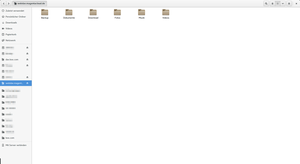
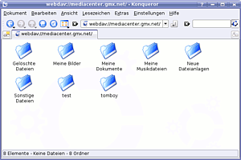

WebDAV
Dieser Artikel wurde für die folgenden Ubuntu-Versionen getestet:
Ubuntu 16.04 Xenial Xerus
Ubuntu 14.04 Trusty Tahr
Zum Verständnis dieses Artikels sind folgende Seiten hilfreich:
WebDAV  (Web-based Distributed Authoring and Versioning) ist ein offener Standard zur Bereitstellung von Dateien im Internet. Der Benutzer kann durch WebDAV auf seine Daten wie bei einer "Online-Festplatte" zugreifen. Bekannte Dienste sind beispielsweise Apples iDisk oder das GMX Mediacenter. Die Einrichtung eines eigenen WebDAV-Servers mittels dem Webserver Apache wird unter Apache/mod dav beschrieben.
(Web-based Distributed Authoring and Versioning) ist ein offener Standard zur Bereitstellung von Dateien im Internet. Der Benutzer kann durch WebDAV auf seine Daten wie bei einer "Online-Festplatte" zugreifen. Bekannte Dienste sind beispielsweise Apples iDisk oder das GMX Mediacenter. Die Einrichtung eines eigenen WebDAV-Servers mittels dem Webserver Apache wird unter Apache/mod dav beschrieben.
Verbindung über Dateimanager¶
Die Dateimanager der Desktopumgebungen GNOME, KDE, Xfce und LXDE können direkt auf WebDAV-Ressourcen zugreifen. Dazu müssen im Regelfall keine weiteren Pakete installiert werden.
Ubuntu (Nautilus)¶

Im GNOME-Menü wählt man "Datei -> Mit Server verbinden ...". Dort gibt es folgende Einstellmöglichkeiten:
| Feld | Eingabe |
| "Dienste-Typ" | Sicheres WebDAV (HTTPS) oder WebDAV (HTTP) |
| "Server" | Name oder IP des Servers (ohne "http://" bzw. "https://") |
| "Port" | Kann man üblicherweise leer lassen |
| "Ordner" | Name des Ordners oder "/" |
| "Benutzername" | Der Benutzername |
Wenn man auf diese Verbindung häufiger zugreifen möchte, kann man noch ein Lesezeichen für das "Orte"-Menü einrichten. Nachdem man seine Daten eingegeben hat, wählt man "Verbinden" aus. Danach wird das Passwort abgefragt, wobei man auswählen kann, ob man das Passwort im GNOME Schlüsselbund speichern möchte, und die Verbindung wird aufgebaut.
Experten-Info:
Man kann eine Verbindung auch direkt durch die Eingabe der Adresse in Nautilus herstellen. Dazu wechselt man von der Pfadansicht der Adresse in die Ort-Eingabe. Dort gibt man dann die Adresse des WebDAV-Verzeichnisses ein, das "http" ersetzt man dabei aber durch "dav", "https" entsprechend durch "davs". Also beispielsweise
davs://webdav.mc.gmx.net/
Seit Ubuntu 13.04 ist diese Methode zwingend, da "Datei -> Mit Server verbinden ..." in Nautilus 3.6.3 keinen Eingabedialog mehr bietet. Für das Mediencenter bei T-Online lautet der Pfad zum Beispiel: davs://account@webdav.mediencenter.t-online.de.
Kubuntu (Dolphin/Konqueror)¶

Um per WebDAV-Zugriff auf beispielsweise das GMX-Mediacenter zu erhalten, muss nur die folgende Zeile in die Adressleiste des Konqueror oder Dolphin eingegeben werden.
webdavs://webdav.mc.gmx.net/
Für unsicheren Zugriff (bei GMX nicht mehr möglich) ohne https kann
webdav://example.org/
benutzt werden. Es öffnet sich ein Login-Fenster, in das noch die GMX-E-Mail-Adresse (Kundennummer) und das entsprechende Passwort eingegeben werden müssen. Daraufhin hat man sofort Zugriff auf die dort abgelegten Daten.
In Dolphin kann man dann die aufgerufene Adresse aus der auf editierbar geschalteten Adresszeile auch in die Orte-Seitenleiste ziehen und dort quasi als "Lesezeichen" ablegen. Alternativ kann man die Adresse auch über "Netzwerk" in der Orte-Seitenleiste einrichten. Dazu wählt man "Netzwerkordner hinzufügen" und dort "Web-Ordner (webdav)" aus. Was für einen Namen man vergibt, bleibt einem selbst überlassen, wichtig ist der Benutzer (bei GMX die komplette EMail-Adresse), der Server (im Beispiel GMX ist das webdav.mc.gmx.net, der Ordner / und die Entscheidung, ob verschlüsselt werden soll (webdavs) oder nicht. Hakt man "Verschlüsselung verwenden" an, wird die Portadresse von 80 auf 443 geändert.
Xubuntu (Thunar)¶
Um via WebDAV ganz bequem auf eigene Dateien zuzugreifen, öffnet man zunächst den Standard-Dateimanager von Xfce: Thunar. Unter "Gehe zu -> Ort öffnen..." gibt man die passende Internet-Adresse für den WebDAV-Zugang an (z.B. dav://example.org/ oder davs://example.org/). Bei der Abfrage von Benutzername und Passwort sollte man die Option "Passwort erst beim Abmelden vergessen" oder "Nie vergessen" wählen. Dann einfach "Verbinden" und schon steht die Verbindung.
Ab Xubuntu 11.10 ist es vorher erforderlich, das Paket gvfs-backends zu installieren. Andernfalls ist es weder via Thunar noch mit Gigolo möglich, WebDAV zu nutzen. Ältere Xfce-Versionen unterstützen WebDAV nicht von Hause aus. Hierfür muss dann Gigolo eingesetzt werden.
Experten-Info:
Sollte man während eines Verbindungsversuchs die folgende Fehlermeldung erhalten:
DBus error org.freedesktop.DBus.Error.NoReply: Did not receive a reply. Possible causes include: the remote application did not send a reply, the message bus security policy blocked the reply, the reply timeout expired, or the network connection was broken..
dann kann man den folgenden Befehl ausprobieren:
sudo dpkg-reconfigure thunar
Verbindung per davfs2¶
davfs2 , das WebDAV Linux File System, ist ein Dateisystemtreiber, der es erlaubt, WebDAV-Internet-Ressourcen als lokales Dateisystem zu mounten. Dadurch kann man WebDAV wie einen normalen Datenträger benutzen und mit jeder Anwendung Daten auf dem WebDAV-Laufwerk ablegen. Dazu müssen die Pakete
ca-certificates
davfs2 (universe)
installiert sein [1]. Anschließend kann man das Verzeichnis mit Root-Rechten an einem beliebigen Mountpunkt einhängen, wobei man selbstverständlich nach dem Benutzernamen und Passwort der WebDAV-Freigabe gefragt wird:
sudo mount -t davfs https://mediacenter.gmx.net /mountpunkt
Einbinden mit Benutzerrechten¶
Falls ein normaler Benutzer die Freigabe einhängen soll, muss das über die Datei /etc/fstab erlaubt werden. Dazu wird diese in einem Editor [3] mit Root-Rechten geöffnet und folgende Zeile eingetragen:
# Allgemein http://<webdavurl> <mountpunkt> davfs user,noauto 0 0 # Allgemein mit verschlüsselter Übertragung https://<webdavurl> <mountpunkt> davfs user,noauto 0 0 # Beispiel gmx.mediacenter https://mediacenter.gmx.net /home/otto/mnt/gmx davfs noauto,user,rw 0 0
Hinweis:
Hier sollte unbedingt darauf geachtet werden, dass man die Option "noauto" in Verbindung mit "user" nimmt. Ansonsten wird beim Systemstart versucht das Verzeichnis einzuhängen, was nicht gelingen wird. Im schlimmsten Fall hat dies zur Folge, dass sich das Betriebssystem gar nicht mehr startet.
Damit jeder Benutzer WebDAV-Laufwerke einbinden darf, muss das SUID-Bit für den Befehl mount.davfs gesetzt werden [2], was man am einfachsten erledigt, indem man folgenden Befehl ausführt und die entsprechende Frage mit "Ja" beantwortet:
sudo dpkg-reconfigure davfs2
Fragen, unter welchen Gruppen- und Benutzerkennungen der Prozess laufen soll, sollte man einfach so bestätigen, wie es vorgeschlagen wird, nämlich mit "davfs2".
Jeder Benutzer, der das WebDAV-Laufwerk ohne Root-Rechte einbinden darf, muss außerdem der Gruppe davfs2 angehören [4].
sudo usermod -aG davfs2 <benutzername>
Will man nicht jedes mal beim mounten die Login-Daten neu eingeben, können diese mit beschränkten Leserechten im System hinterlegt werden. Dabei hat man zwei Möglichkeiten. Die erste ist es, die Benutzerdaten global, d.h. für alle Benutzer, im System zu hinterlegen. Dazu bearbeitet [3] man die Datei /etc/davfs2/secrets mit Root-Rechten:
# Allgemein # <Mountpunkt / WebDAV-URL> <login> <passwort> # Beispiel /mnt manfred.mustermann@gmx.de geheimespasswort # oder https://mediacenter.gmx.net manfred.mustermann@gmx.de geheimespasswort
Die zweite Möglichkeit ist, die Login-Daten lokal im Homeverzeichnis des Benutzer zu hinterlegen. Die Herangehensweise ist wie bei der ersten Möglichkeit, nur ohne Root-Rechte. Zuerst in der Datei ~/.davfs2/secrets [3]:
# Allgemein # <Mountpunkt / WebDAV-URL> <login> <passwort> # Beispiel /home/otto/mnt/gmx manfred.mustermann@gmx.de geheimespasswort
die Login-Daten eintragen, dann aber mit
chmod 600 ~/.davfs2/secrets
unbedingt die Leserechte der Datei einschränken. Auf Mehrbenutzersystemen sollte die Datei zuerst leer erzeugt und ihre Zugriffsrechte auf 600 umgestellt werden, bevor sie mit den Zugangsdaten befüllt wird.
Für die Authentifizierung an Windows-WebDAV-Servern ist unter Umständen ein voll qualifizierter Benutzername (Down-Level Logon Name) nach dem Schema Domain\login erforderlich. In einem solchen Fall müssen in der secrets-Datei Domäne und login durch zwei \ getrennt (z.B. /home/martin/mnt/webdav domain\\martin geheimwort) werden.
Nun kann das GMX-Mediacenter eingebunden werden. Dazu muss man im Terminal
mount ~/mnt/gmx
eingeben. Dabei muss der Einhängepunkt gegebenenfalls vorher angelegt werden
mkdir -p ~/mnt/gmx
Hinweis:
Eine alternative Möglichkeit, per WebDAV bereitgestellte Daten mit Benutzerrechten einzubinden, bietet auch gvfs-mount.
Problembehebung¶
Abbruch durch unbekannte Option¶
Hängt man eine WebDAV-Ressource mit Benutzerrechten
mount https://mediacenter.gmx.net
ein, so kann es vorkommen, dass dies mit der Fehlermeldung
/sbin/mount.davfs:/home/<benutzername>/.davfs2/davfs2.conf:16: unbekannte Option
abgebrochen wird. Schuld daran sind die Einträge der Optionen dav_user und dav_group in der Datei ~/.davfs2/davfs2.conf. Diese Datei wird von Davfs2 bei der ersten Benutzung von /etc/davfs2/davfs2.conf ins Homeverzeichnis kopiert, aber die beiden Optionen sind leider gar nicht gültig, wenn man das Programm nicht mit Root-Rechten startet. Deshalb sollte man in diesem Falle die Datei mit einem Editor öffnen [3] und die entsprechenden Zeilen auskommentieren:
# dav_user davfs2 # system wide config file only #dav_user nobody # dav_group davfs2 # system wide config file only #dav_group staff
"slash-" in Datei- und Verzeichnisnamen¶
Werden nach dem mounten der WebDAV-Ressource Datei- und Verzeichnisnamen mit zusätzlich eingefügtem "slash-" oder "-slash-" angezeigt, lässt sich dies mit einer Änderung in der Datei ~/.davfs2/davfs2.conf beheben.
Diese dazu mit einem Editor öffnen [3] und den Eintrag
# use_displayname 1
durch
use_displayname 0
ersetzen.
Fehler - Home-Verzeichnis des Benutzers kernoops¶
Falls man folgenden Fehler bekommt: "/sbin/mount.davfs: / ist das Home-Verzeichnis des Benutzers kernoops. Du kannst im Home-Verzeichnis eines anderen Benutzers kein Dateisystem einhängen"
Als Abhilfe muss in der Datei /etc/davfs2/davfs2.conf die Zeile
ignore_home kernoops
eingefügt werden.
davfs will das SSL Zertifikat nicht anerkennen¶
Wenn die Fehlermeldung "Wir trauen dem Zertifikat nicht" oder das Nachfragen von davfs bei einem nicht-verifiziertem Zertifikat nicht erwünscht ist, muss das Zertifikat manuell importiert werden. Dazu wird es zunächst heruntergeladen:
openssl s_client -connect HOSTNAME.at:443 -showcerts </dev/null 2>/dev/null | openssl x509 -outform PEM > meinzertifikat.pem
Diese Datei wird dann in /etc/davfs2/certs (systemweit) oder in ~/.davfs2/certs (per Benutzer) abgelegt:
sudo cp meinzertifikat.pem /etc/davfs2/certs/
Um davfs zu sagen, wo das Zertifikat liegt, muss in der /etc/davfs2/davfs2.conf bzw. ~/.davfs2/davfs2.conf Folgendes hinzugefügt werden:
trust_server_cert /etc/davfs2/certs/meinzertifikat.pem
Alternativ reicht auch die folgende Zeile, da die Pfade /etc/davfs2/certs/ und ~/.davfs2/certs/ automatisch durchsucht werden:
trust_server_cert meinzertifikat.pem
davfs automatisch betreiben¶
Manchmal kann es sinnvoll sein, davfs in z.B. einem Skript zu benutzen. Dann möchte man natürlich nach Möglichkeit nicht, dass jedes mal nach dem Benutzernamen und dem Passwort gefragt wird. Dies macht der folgende Befehl:
echo -e "Benutzername\nPasswort"|sudo mount -t davfs <Server> <Einhängepunkt>
Wenn auch ein ungültiges Zertifikat übersprungen werden soll, kann man dies so machen:
echo -e "Benutzername\nPasswort\nj"|sudo mount -t davfs <Server> <Einhängepunkt>
Hinweis:
In Skripten muss man das -e weglasssen.
Achtung!
Wenn man das Passwort und den Benutzernamen in einem Skript abspeichert, so ist das Passwort und der Benutzername für jeden lesbar, der das Skript lesen bzw. ausführen kann.
Abbruch bei WebDAV zu Windows-Server¶
Hängt man eine WebDAV-Ressource eines Windows-Servers mit mount.davfs über sicheres WebDAV
mount https://webdav.example.org
ein, so kann es vorkommen, dass dies mit der Fehlermeldung
p11-kit: couldn't open config file: /root/.pkcs11/pkcs11.conf: Keine Berechtigung /sbin/mount.davfs: das Einhängen schlug fehl; Legitmierung am Server fehlgeschlagen: Challenge NTLM wurde ignoriert, GSSAPI-Legitimierungsfehler: Unspecified GSS failure. Minor code may provide more information: Credentials cache file '/tmp/krb5cc_0' not found
abgebrochen wird. Ursache ist, dass mount.davfs standardmäßig GnuTLS verwendet, GnuTLS und WebDAV-Ressource von Windows-Servern aber nicht reibungsfrei zusammenarbeiten. Durch Umstellen von mount.davfs auf OpenSSL kann dieses Problem zumindest umgangen werden. Dazu muss libneon (verwendet OpenSSL) zusätzlich zu libneon-gnutls installiert werden. Danach wird der Link auf libneon-gnutls als Workaround auf libneon umgebogen. Dieses Vorgehen ist zwar nicht optimal, löst jedoch die Anmeldeprobleme bei einer Authentifizierung an Windows-Servern. Der Superuser muss folgende Befehle ausführen um diesen Workaround einzurichten (Version laut Ubuntu 13.10).
sudo apt-get install libneon27 sudo mv /usr/lib/libneon-gnutls.so.27 /usr/lib/libneon-gnutls.so.27.orig sudo ln -s /usr/lib/libneon.so.27 /usr/lib/libneon-gnutls.so.27
Eine bessere und dauerhafte Lösung (Restauration des Links bei Updatets beenden den Workaround) wäre das Umstellen von mount.davfs2 auf OpenSSL bzw. die Erstellung einer OpenSSL-Variante von mount.davfs durch Binden mit libneon anstatt libneon-gnutls.
Liste mit WebDAV-Anbietern¶
Es gibt eine Reihe von Anbietern, die Zugang zu Webspace zum Teil sogar kostenlos anbieten. Hier sollen Anbieter und die Zugangsdaten gesammelt werden. Verwendet wird durchgängig sicheres WebDAV (HTTPS).
Hinweis:
Die angegebenen URLs dienen nur zum Lesezugriff im Browser. Bei den in der Spalte "Server" genannten Adressen ist beim Einsatz eines Dateimanagers http:// bzw. https:// durch
dav://bzw.davs://(Unity, GNOME 3, Xfce, LXDE)webdav://bzw.webdavs://(KDE)
zu ersetzen.
| Anbieter | ||||
| Anbietername | Server | Ordner | Benutzername | |
| GMX Mediacenter | https://webdav.mc.gmx.net | leer lassen | Kundennummer bzw. E-Mail-Adresse bei GMX | |
| WEB.DE Smartdrive | https://webdav.smartdrive.web.de | leer lassen | E-Mail-Adresse bei Web.de | |
| ownCloud | https://ownCloud-SERVER-URL/remote.php/webdav/ | / | owncloud Benutzername | |
| Seafile | https://Seafile-SERVER-URL/seafdav/ | (Library) | e-Mail des Seafile Accounts | |
| T-Online | https://webdav.mediencenter.t-online.de | / | E-Mail-Adresse bei T-Online | |
| Telekom MagentaCloud | https://webdav.magentacloud.de | / | E-Mail-Adresse bei T-Online | |
| 1&1 SmartDrive (DSL Kunden) | https://sd2dav.1und1.de | / | E-Mail-Adresse bei 1&1 | |
| 1&1 SmartDrive (Webhosting Kunden) 1 | https://webdav.office.1und1.de/ | / | E-Mail-Adresse bei 1&1 | |
| Domainfactory | FTPUSERNAME.livedisk.df.eu/webdav/ | / | FTPUSERNAME@web.dav | |
| freenet | https://webmail.freenet.de/webdav | / | freenet-Nutzerdaten | |
| myDisk.se | https://mydisk.se/Benutzername | / | freie Eingabe | |
| Humyo.com (nicht empfehlenswert, buggy!) | https://dav.humyo.com | / | E-Mail-Adresse | |
| mydrive.ch | https://webdav.mydrive.ch | / | Benutzername | |
| Strato Hidrive | https://webdav.hidrive.strato.com/ | (s. Anleitung) | Benutzername | |
| UD Media | https://<eigene_domain_oder_subdomain>/ | / | Benutzername | |
| Mailbox.org | https://office.mailbox.org | servlet/webdav.infostore/ | Benutzername | |
| MyKolab.com | https://webdav.mykolab.com | leer lassen | USERNAME@mykolab.com | |
| blaucloud.de | https://<user>.blaucloud.de/remote.php/webdav/ | / | oder weiterer ownCloud Benutzername | |
| ADrive.com 2 | https://www.adrive.com/webDAV.php | leer lassen | Benutzername | |
| box.com | https://dav.box.com/dav | leer lassen | Benutzername | |
1 Nutzer der 1&1-Webpakete: Hier muss in der Datei /etc/fstab hinter der URL immer noch der Port 81 angegeben werden, also z.B. http://meinwebdav.domain.de:81 /home/user/mnt/1und1 davfs user,noauto 0 0
2 WebDAV nur in der kostenpflichtigen Version verfügbar
Links¶
gvfs-mount - auch GVFS unterstützt WebDAV
Subversion & Certificate Problems with Ubuntu Precise Pangolin
- Blogbeitrag, 05/2012
- Erstellt mit Inyoka
-
 2004 – 2017 ubuntuusers.de • Einige Rechte vorbehalten
2004 – 2017 ubuntuusers.de • Einige Rechte vorbehalten
Lizenz • Kontakt • Datenschutz • Impressum • Serverstatus -
Serverhousing gespendet von